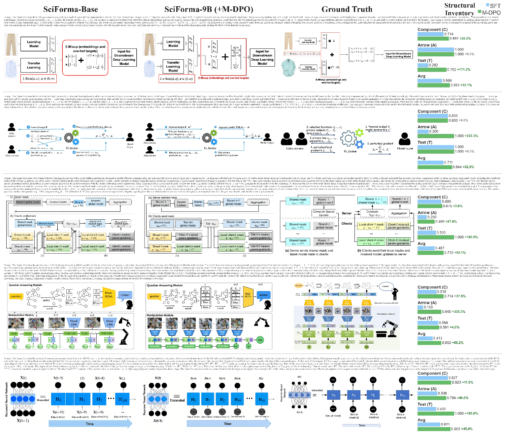
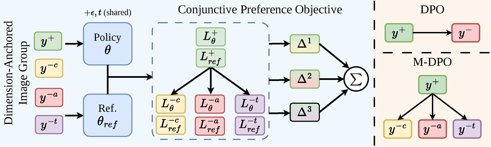
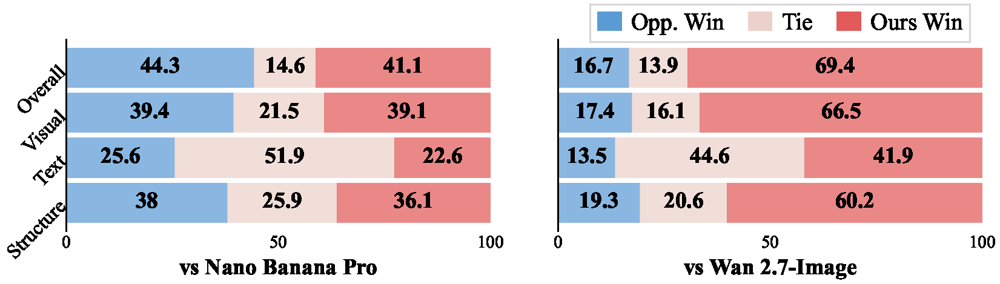

SciForma
Structure-Faithful Generation of Scientific Methodology Diagrams
1Peking University 2Zhejiang University 3Microsoft Research Asia
SciForma
Structure-Faithful Generation of Scientific Methodology Diagrams
1Peking University 2Zhejiang University 3Microsoft Research Asia
SciForma-9B generated scientific methodology diagrams. Hover 3s to zoom · Click to expand.
Scientific methodology diagrams — flowcharts, pipelines, and architecture figures in academic papers — demand precise structural fidelity: every component, arrow, and text label must be faithfully represented. Existing text-to-image models generate visually appealing outputs but routinely violate structural constraints, rendering them unsuitable for rigorous scientific illustration.
We introduce SciForma, a 9B-parameter framework that decomposes diagram quality into three independently verifiable axes — Component, Arrow, and Text — guided by a structural inventory. Built on FLUX.2-klein-base-9B, SciForma is fine-tuned through two SFT stages and post-trained with Multi-Dimensional Conjunctive Preference Optimization (M-DPO), which enforces simultaneous correctness across all axes and adaptively routes gradients toward the most deficient axis. SciForma achieves 69.51% on SciFormaBench-2K, surpassing all open-source baselines and approaching commercial models (GPT-Image-1.5: 68.96%). On AIBench, SciForma-9B reaches 70.29 — edging human-drawn originals (70.09).
Per-axis (Component / Arrow / Text) verification with critical and moderate error severity, replacing single holistic scores with fine-grained structural evaluation.
Multi-way Bradley–Terry objective with dimension-anchored preference construction and adaptive gradient reweighting. Breaks the SFT plateau where scalar DPO / GDRO / GRPO stagnate.
Generate figures directly from your paper's LaTeX source via a GPT planner + SciForma-9B renderer, closing the loop between paper writing and figure generation.
SciFormaData-700K: 661K generation pairs + 70K editing triplets.
SciFormaBench-2K: Simple/Medium/Hard with human-verified structural inventories.
GPT-5.4 judge · 2,000 diagrams (Simple 500 / Medium 900 / Hard 600) · Click column to sort
| # | Method | Avg ↑ | Simple | Medium | Hard | Comp. | Arrow | Text | Open |
|---|---|---|---|---|---|---|---|---|---|
| 1 | GPT-Image-2 | 85.62 | 88.41 | 85.66 | 83.26 | 83.34 | 89.61 | 83.53 | ❌ |
| 2 | NanoBananaPro | 81.34 | 85.30 | 81.70 | 77.50 | 81.10 | 83.60 | 78.70 | ❌ |
| 3 | SciForma-9B + Edit | 72.40 | 79.82 | 72.59 | 66.01 | 76.70 | 69.91 | 70.14 | ✅ |
| 4 | SciForma-9B (M-DPO) | 69.51 | 77.20 | 69.69 | 62.86 | 74.49 | 66.46 | 67.00 | ✅ |
| 5 | GPT-Image-1.5 | 68.96 | 75.50 | 69.60 | 62.60 | 75.70 | 62.50 | 68.20 | ❌ |
| 6 | SciForma-Base (SFT) | 67.59 | 76.01 | 67.43 | 60.83 | 73.52 | 64.64 | 63.84 | ✅ |
| 7 | Wan2.7-Image | 64.71 | 73.90 | 65.90 | 55.30 | 71.90 | 60.30 | 61.10 | ❌ |
| 8 | SenseNova-U1-8B | 51.14 | 59.57 | 51.86 | 43.02 | 61.34 | 50.16 | 40.37 | ❌ |
| 9 | FLUX.2-dev-32B | 48.81 | 57.60 | 49.30 | 40.80 | 62.50 | 38.60 | 44.60 | ✅ |
| 10 | Qwen-Image-2512 | 48.73 | 57.50 | 49.90 | 39.60 | 61.20 | 46.60 | 36.80 | ❌ |
| 11 | Z-Image | 48.50 | 57.20 | 49.70 | 39.40 | 58.30 | 46.90 | 38.50 | ❌ |
| 12 | FLUX.2-klein-base-9B | 33.87 | 42.80 | 34.20 | 26.00 | 51.50 | 25.20 | 23.60 | ✅ |
| 13 | FLUX.1-dev | 20.64 | 26.40 | 20.70 | 15.80 | 40.60 | 11.20 | 8.50 | ✅ |
| 14 | Bagel-7B | 16.31 | 18.40 | 16.20 | 14.70 | 35.50 | 9.50 | 2.20 | ✅ |


SciForma supports iterative refinement through its editing module. Starting from an initial generation, the model progressively refines structure, arrows, and text alignment through directed edit instructions.

Five cases showing iterative structural refinement. Each row: initial output → refined result.

SciForma training pipeline: (1) two-stage SFT on SciFormaData-700K, followed by (2) M-DPO post-training with per-axis preference pairs.
SciFormaData-700K is a large-scale dataset of scientific methodology diagrams curated from 338,214 arXiv papers spanning 2015–2025. It contains 661,660 generation pairs (image + structured caption) across two resolution tracks (768px and 1024px), and 70,866 editing triplets (source image + edit instruction + target image).
Paired diagram images with structured captions describing components, arrows, and text labels.
Source → edit instruction → target image triples enabling diagram editing fine-tuning.
Sourced from 10 years of arXiv preprints across CS, EE, and interdisciplinary fields.
244K high-quality subset used for stage 2 SFT, filtered by structural complexity and quality tier.
Dataset pipeline: paper PDF extraction → diagram detection → caption generation → quality filtering.

Structural inventory: per-axis rubrics with critical and moderate error annotations.
SciFormaBench-2K consists of 2,000 scientific methodology diagrams across three difficulty levels: Simple (500), Medium (900), and Hard (600). Each diagram is annotated with a structural inventory — a structured description of expected components, arrow connections, and text labels — enabling automatic axis-level scoring via a GPT-5.4 judge.
3 difficulty splits: Simple (500), Medium (900), Hard (600).
Component / Arrow / Text scores, each with critical and moderate error levels.
All 2,000 structural inventories manually verified for accuracy.
Automated evaluation via structured GPT-5.4 rubric scoring.
Multi-Dimensional Conjunctive Preference Optimization (M-DPO) extends standard DPO to the multi-axis setting. For each sample, we construct a multi-way preference group: one winner and three axis-specific losers (component-specific, arrow-specific, text-specific). The training objective enforces conjunctive correctness — the model must simultaneously satisfy all three axes. An adaptive gradient reweighting mechanism routes optimization effort toward the weakest axis.

Ablation: each M-DPO component contributes incremental gain, with Text axis benefiting most (+3.16 pts).
| Method | Avg | Comp. | Arrow | Text |
|---|---|---|---|---|
| SciForma (SFT) | 67.59 | 73.52 | 64.64 | 63.84 |
| + DPO | 68.42 +0.83 | 74.14 | 65.32 | 65.08 |
| + DPO (Pareto) | 68.55 +0.96 | 74.48 | 65.57 | 64.83 |
| + M-DPO (mean) | 69.31 +1.72 | 74.54 | 66.28 | 66.47 |
| + M-DPO (ours) | 69.51 +1.92 | 74.49 | 66.46 | 67.00 |



@article{luo2026sciforma,
title = {SciForma: Structure-Faithful Generation of Scientific Methodology Diagrams},
author = {Luo, Yuxuan and Zhang, Peng and Zhang, Xinjie and
Guo, Xun and Lian, Zhouhui and Lu, Yan},
journal = {arXiv preprint},
year = {2026}
}
SciForma is a research project. Datasets used are sourced from publicly available arXiv preprints and have been reviewed to ensure no personally identifiable information or harmful content. The model is intended for academic diagram generation only and is not designed for commercial deployment without further safety review.
Material Disclaimer: Materials on this page are provided solely for academic and research purposes. If you believe any content infringes your intellectual property rights, please contact the corresponding authors.